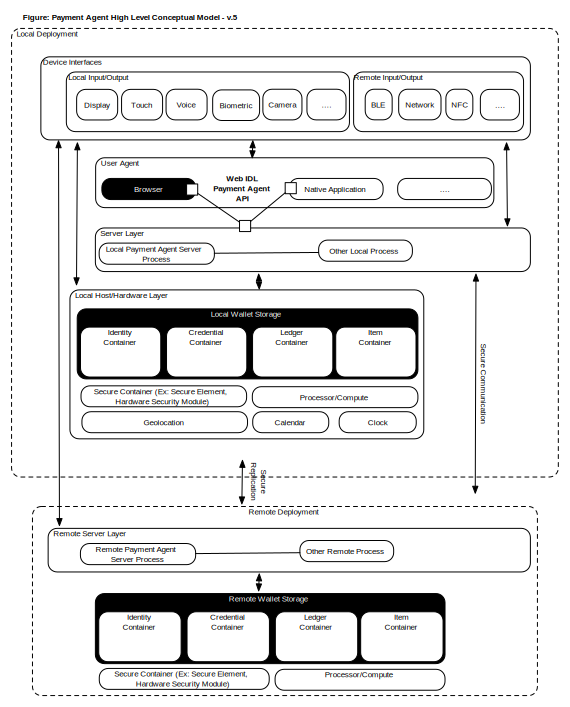

This document describes architectural requirements, concepts and rationale that would need to be provided to support current and planned use cases outlined in the Web Payments Activity. This document is intended to provide an overview of core concepts related to the Payment Agent and considerations related to their use.
Custom Status of the Document language goes here.
Introduction
A payment agent is defined as a software service that:
- Provides a standard inteface for the collection of payment related information from user agents (ex. browsers, apps, or other web-enabled clients) which meets the following criteria:
- Supports consistent, secure interface and apis for communication of payment data required to support payment schemes (ex. cards, digital currency, etc.) for common data elements
- Provides ability to access information needed as part of the payment process in a standard way (ex, authentication data, account information, loyalty cards, etc.)
- Is accessible from mutliple user agents
- Receives requests from either local or remote user agents
- Communicates with existing payment schemes/infrastructure to facilitate value tranfer
- Coordinates with other payment agents to facilitate payments related information flows
Overview of the Payment Agent

Payment Agent in context
High level overview of how a payment agent works... (NEED TO INCORPORATE USE CASE DIAGRAMS/LINKAGES HERE)
Required (core) Capabilities
This section outlines the required capabilities that a Payment Agent must provide to meet minimal viable requirements:
- Ability to receive and reply with standard formatted messages following payment agent API/protocol specifications
- Abiltiy to interact with user agent Display Services for displaying payment related information
- Ability support synchornization between multiple payment agents operating on behalf of a single user agent
- Ability to support user agents running locally and remotely from payment agent
(NEED TO TIE TO CORE STANDARDS)
Optional Capabilities
This section outlines the required capabilities that a Payment Agent could provide but are not required.
- Ability to communicate with Host Device Camera for accepting payment related info via visual input (ex. QR code or Bar code, etc)
- Abiltiy to interact with Host Device Microphone for accepting payment related information via transmission of sound
- Ability to interact with Host Biometric Services for accepting biometric authentication data required for payment process
- Ability to interact with Host NFC (Near Field Contact) services to support proximity payments flows
- Ability to interact Host with BLE (Blue Tooth Low Energy) services to support local/proximity information exchange needed to support localized offers (ex. in store beacons)
(NEED TO TIE TO CORE STANDARDS)
Payment Agent API
The Payment Agent API is a standard protocol and set of API's which facilitate exchange of payment related data in a standard manner with user agents. The following is a list of the API's that the Payment Agent protocol will support:
- Identification and Authentication of Payment Participants
- Payment Scheme/Instrument selection, clearing and settlement
- Contracts and conditional payment
- Authorization, Monitoring and Control
- Ledger and Accounting
- Taxation
- Delivery and Shipping
- Payment Scheduling and Calendering
- Regulatory and Reporting
- Wallet and Instrument provisioning and administration
- Security and Auditing
Conceptual Architecture
DRAFT/PLACEHOLDER (NEED TO UPDATE)

Acknowledgements
The editors are thankful to the following contributions from ...
(in alphabetical order):
List of contributors/reviewers.